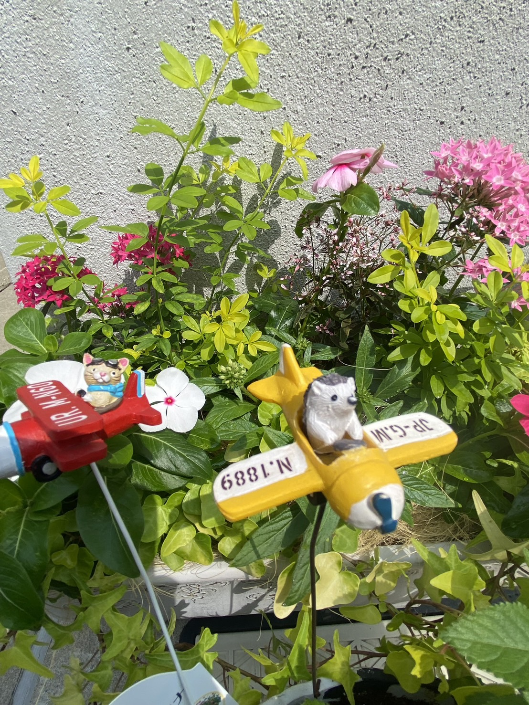

Garden Room
Flowers, Plants & Small Garden Life
季節の花や植物、日々のガーデニングの記録を展示する小さな庭のページです。
ゆっくりと変化していく庭の景色を、写真とともに残していきます。

季節の花
季節ごとに咲く花を紹介します。
Garden Photo
小さな庭
庭づくりの変化や日々の様子を記録します。
Garden Photo
お気に入り
特に気に入っている花や植物を集めます。
← Shirokuma Art Gallery に戻る